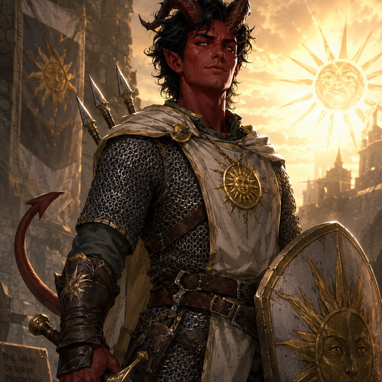

On the Rise
Active campaign. A new table takes up Descent into Avernus — Elturel’s fall, the road through Avernus, and whatever salvation still costs.
"Active campaigns are living knowledge. The next session can change everything."
Company Character Sheets
Your Company Character Sheet for this table — something you can learn between turns. Accurate. Yours. Opens the play sheet. Discovery Reports will live in Deep Memory when the chamber is ready.


About this image
About the Image
This image began as a birthday gift from my daughter in 2020, created during an earlier Descent into Avernus campaign.
For On the Rise, the original design was cleaned up and sharpened for use on the website while preserving the parts that made it personal: the skull, the infernal red linework, and the title “Dad Was Sent Into Avernus.”
It is not official campaign artwork.
It is a piece of family-made campaign history that has followed us back to Avernus.